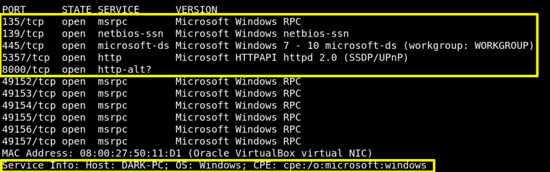
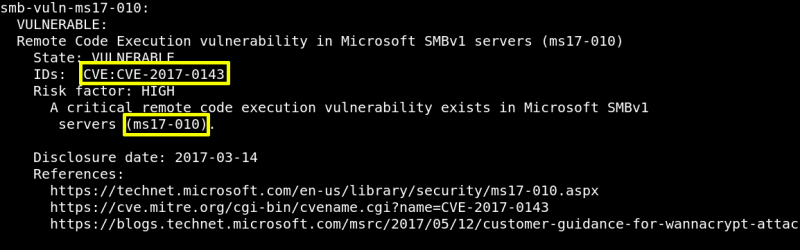

2.1 db_nmap
$msfconsole
msf5 > db_nmap -sV -vv --script vuln 192.168.12.45
Output:


As a result we found:
1. It's a Windows 7 Machine.
2. Ports under 1000 opened are: 135, 139, 445 and 5357.
3. The machine is vulnerable to “Remote Code Execution vulnerability in Microsoft SMBv1 servers (ms17-010)”.
4. CVE: CVE-2017-0143.
Index